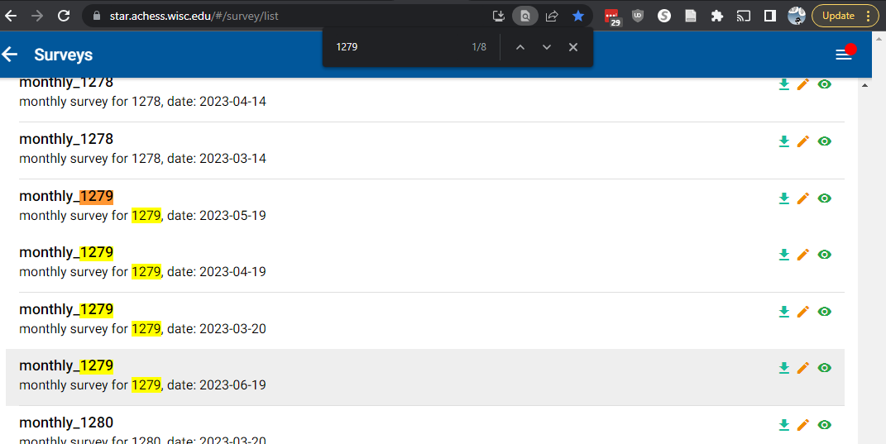
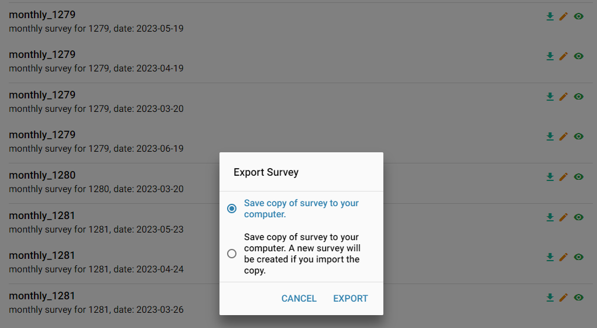
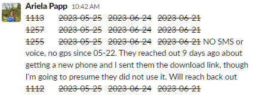

63 Dynamic Survey Uploads
Each month, participants receive a “dynamic” monthly survey, where the first questions are personalized to ask them about the context of people they’ve talked to or places they’ve visited frequently, over the previous 30 days.
Susan is responsible for overseeing an automated script that “makes” the places and people files for each participant. This script is called make_dynamic.R and is located in analysis_risk2/staff_scripts/automation.
Other staff are responsible for uploading the personalized dynamic surveys. This is done daily, using a script called upload_monthly_people_places.Rmd, located in analysis_risk2/staff_scripts.
This page describes how to create the dynamic survey using the upload_monthly_people_places.Rmd script.
63.1 Get list of participants who need uploads
Run the following code in the r console. You can also use data_report_by_subid.Rmd; if you’ve run it once and all the dataframes are loaded, look for Chunk 10: dynamic_survey_dates.
library(tidyverse)
library(here)
path_lab_support <- "../lab_support"
path_data_admin <- "P:/studydata/risk2/data_admin/"
source(here("functions", "fun_star.R"))
source(here(path_lab_support, "fun_gps.R"))
path_admin <- "P:/administration"
token_qualtrics <-
read_csv(file.path(path_admin, "credentials.csv")) %>%
filter(resource == "qualtrics") %>%
pull(token)
on_study <- get_on_study(login_creds, token_qualtrics) %>%
rename(sub_guid = user_guid)
on_study %>% select(subid, last_monthly_survey_window_open_date) %>%
mutate(next_monthly_survey_date = as_date(last_monthly_survey_window_open_date, format = "%m/%d/%Y") + days(30)) %>%
arrange(next_monthly_survey_date) %>%
mutate(upload_due_date = next_monthly_survey_date - days(3)) %>%
arrange(upload_due_date) %>%
print(n=Inf)Running that code will print to the console, a list of subs and the dates of their surveys, ie:
# A tibble: 146 × 4
subid last_monthly_survey_window_open_date next_monthly_survey_date upload_due_date
<dbl> <date> <date> <date>
1 1279 2023-05-23 2023-06-22 2023-06-19
2 1130 2023-05-23 2023-06-22 2023-06-19
3 1309 2023-05-23 2023-06-22 2023-06-19
4 1344 2023-05-24 2023-06-23 2023-06-20
5 1191 2023-05-24 2023-06-23 2023-06-20
6 1132 2023-05-24 2023-06-23 2023-06-20
7 1190 2023-05-24 2023-06-23 2023-06-20 The most important column here is the last one, upload_due_date. That’s the date the survey for this person needs to be uploaded.
Scroll down in this list till you find today’s date in that column, then copy those rows and paste them into a DRAFT slack message to Susan & Ariela.
You’ll use that draft to work from, so you can check off each person as you complete their upload.
63.2 Running the script
This script is heavily commented to walk you through each step. There are 6 places you need to click.
Start by copying the first subid from your draft Slack message (highlight, ctrl-C) and paste it into line 27 in the first chunk of the upload_monthly_people_places.Rmd script, ie:
site <- "live"
subid <- 1279 63.3 Click 1
Scroll down till you see “Click 1”. Hit the grey & green down-arrow, to run all the chunks above that.
When the code finishes running, it will print 2 lists to the console. One is a list of recent phone numbers the person talked to (this is actually repeated twice but there’s no difference). The second is the list of recent places this person visited.
You need to check 3 things on the phone numbers:
- Do all rows display the correct subid?
- Are all the phone numbers 10 digits and look like real phone numbers (no number has letters in it or is just a few digits long?)
- Are all the dates within the last 30 days?
You need to check 4 things on the places:
- Do all rows display the correct subid?
- Are all the dates within the last 30 days?
- Are all the locations look similar? Are they all in the same state (or occasionally 2 adjacent states)? Do all the lat/lon values look similar? If most cities are in Texas but a few are in Wisconsin, or most lat/lon are in the 31-33 and 89-91 range, but a few are like 22/104, that’s concerning and you should stop and tell Susan.
- Does every row have a city name? If any city name is blank you need to stop and tell Susan.
Sometimes, one or both lists will be an empty tibble with 0 rows. That usually only happens after a person has been on study for several months, and just means they had no new places or no new people. You should go ahead and continue, but in your draft slack message, comment “no new people” and/or “no new places” at the end of the row for that subid.
If every check above is okay, proceed to Click 2.
63.4 Click 2
Hit the green sideways arrow under Click 2, which just runs that chunk.
This chunk checks a few more things, then if it’s okay, will flash Looks good, make survey on the screen. Then you’ll see a bunch of lines as the survey is built.
The 2 most common errors you will see are Warning, old data. Please veryify before proceeding and Warning, blank city name. Please correct. In either case, stop and and tell Susan.
If there are no errors that display, you can proceed to Click 3.
63.5 Click 3
Hit the green sideways arrow under Click 3, which just runs that chunk.
All of these checks are automatic, you just need to wait till you see Everything Checks Out. If you see an error here, stop and tell Susan.
If there are no errors, you can proceed to Click 4.
63.6 Click 4
Hit the green sideways arrow under Click 4, which just runs that chunk.
Two lists will display. They can be very long if there are lots of people or lots of places.
Scroll up to the top of the list of people. Each question should look like one of these:
[28] "You texted or spoke to a person whose phone number is <strong>6082625621</strong> several times in the past month. Most recently, you texted with them on Friday May 26, 2023. This number is not saved in your contacts."
[33] "You texted or spoke to a person whose phone number is <strong>6082625621</strong> several times in the past month. Most recently, you texted with them on Wednesday May 24, 2023. This person is saved in your contacts as <strong>Susan</strong>."Glance through all of these and make sure that there is a phone number for each item, a date for each item, and that each item looks like one of these two. If you have a blank item, date, or blank phone number, or if you see instead of a valid date, number, or name, like these examples (you guessed it!) stop and tell Susan.
[28] "You texted or spoke to a person whose phone number is <strong></strong> several times in the past month. Most recently, you texted with them on Friday May 26, 2023. This number is not saved in your contacts."
[28] "You texted or spoke to a person whose phone number is <strong>6082625621</strong> several times in the past month. Most recently, you texted with them on , 2023. This number is not saved in your contacts."
[33] " "
[34] ""
[35] "You texted or spoke to a person whose phone number is <strong> </strong> several times in the past month. Most recently, you texted with them on Wednesday May 24, 2023. This person is saved in your contacts as <strong> </strong>."If all of these look okay, scroll down to the locations. They should all look like this:
[1] "{\"variable_name\":\"location_1_gps\",\"set_marker_at_starting_location\":true,\"starting_latitude\":\"100.564689854\",\"starting_longitude\":\"99.986519632\",\"starting_zoom_level\":\"15\"}"
[2] "{\"variable_name\":\"location_1_gps3\",\"set_marker_at_starting_location\":true,\"starting_latitude\":\"100.564689854\",\"starting_longitude\":\"99.986519632\",\"starting_zoom_level\":\"15\"}"
[3] "{\"variable_name\":\"location_1_gps2\",\"set_marker_at_starting_location\":true,\"starting_latitude\":\"100.564689854\",\"starting_longitude\":\"99.986519684\",\"starting_zoom_level\":\"15\"}"
[4] "{\"variable_name\":\"location_1_gps\",\"set_marker_at_starting_location\":true,\"starting_latitude\":\"99.989778789\",\"starting_longitude\":\"99.231242142\",\"starting_zoom_level\":\"15\"}"
[5] "{\"variable_name\":\"location_1_gps3\",\"set_marker_at_starting_location\":true,\"starting_latitude\":\"99.989778789\",\"starting_longitude\":\"99.231242142\",\"starting_zoom_level\":\"15\"}"
[6] "{\"variable_name\":\"location_1_gps2\",\"set_marker_at_starting_location\":true,\"starting_latitude\":\"99.989778789\",\"starting_longitude\":\"99.231242142\",\"starting_zoom_level\":\"15\"}"You’ll notice that each location is repeated 3 times - so in the example above, this is 2 distinct locations.
This is the second place that you need to make sure the locations are all similar. Scroll slowly through the list, first checking the latitudes are all similar, then scroll the other way, slowly checking that all the longitudes are similar.
This is how we can make sure, a) the survey built correctly and didn’t leave in any placeholder data, and b) this person’s GPS locations are accurate. If you see any that are wildly different, tell Susan, who will need to check the raw data and make sure of what happened.
If everything looks normal, you can continue to click 5.
63.7 Click 5
Hit the green sideways arrow under Click 5, which just runs that chunk.
This is where the survey is built and pushed to the STAR servers. There are usually no errors here. When it finishes, it will tell you:
Success! Go to STAR and export for subid 1279
Go into star, download a copy (NOT the kind that says “imports as a new survey”)
63.8 Go into STAR and download the newly created survey
Go into the STAR website at https://star.achess.wisc.edu/. Make sure you’re logged in as the admin user.
In the sidebar menu, click Site Settings, then at the top click Surveys.
It takes a LONG time for this page to finish loading (30 seconds to 2 minutes). You’ll know when it’s finished when you are able to scroll up and down.
You should still have the subid in your clipboard. If not, grab the subid again from either the message at the end of click 5, or your draft Slack post. Hit ctrl-F to bring up the chrome “Find” box, and paste the subid in.
 The latest survey (which should have today’s date!) will almost always be at the bottom of the list. Click the green down-arrow in that row, and you’ll see this:

Do not change the radio button; just click Export. A window will pop up for you to choose where to save it; save to your computers’ Downloads folder. Do not change the default file name.
Once it has saved, proceed to Click 6.
63.9 Click 6
Hit the green sideways arrow under Click 6, which just runs that chunk.
RStudio will launch a second window for you to browse to the survey you just downloaded. It might pop up in the background and you will have to switch to it using the taskbar.
Browse to the survey you just downloaded, select it, and hit Open.
If you selected the correct survey, you should see Looks good, getting ready to re-upload fixed survey. After a minute or two, you will see Success 200 subid 1279 is done
63.10 Update your draft Slack message
Once the survey for this subid is uploaded, go back to your draft slack message and select the line for that person (excluding any notes you added). Change the font to strikethrough, which indicates the survey for that subid is complete. Copy the next subid, and start again from the stop of the script.
When all subids are complete, send your message. It would look like this:
